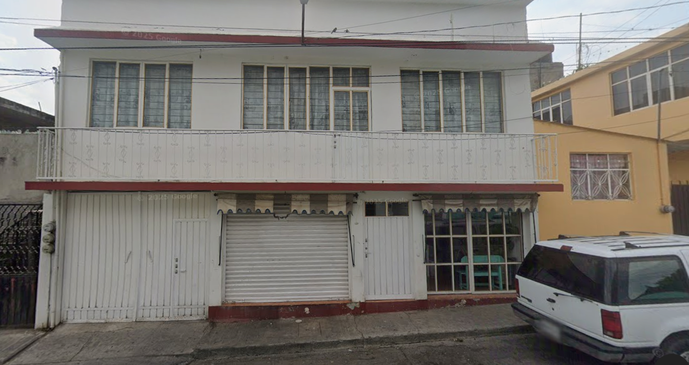

Pollo fresco del día
Todos los días recibimos y preparamos pollo fresco para que cocines con la tranquilidad de llevar calidad a tu hogar.
Pollería tradicional local
Pollería Doña Beky
Fresco todos los días, bien preparado y con la calidad que las familias de Ixtapan conocen y prefieren.

Lo que nos distingue
Todos los días recibimos y preparamos pollo fresco para que cocines con la tranquilidad de llevar calidad a tu hogar.
Cada pieza se prepara cuidadosamente de forma tradicional para conservar mejor su color, apariencia y frescura.
La frescura se nota a simple vista. Un pollo con mejor color, mejor apariencia y calidad que inspira confianza.
Atención amable y directa para que hagas tu pedido rápido y con la confianza de siempre.

¿Por qué elegirnos?
Sabemos que cuando compras pollo para tu familia buscas algo más que buen precio. Buscas frescura, limpieza y confianza.
Por eso en Pollería Doña Beky trabajamos todos los días para ofrecer pollo fresco, bien preparado y listo para llegar a tu cocina.
Hacer pedido por WhatsAppHorario
Visítanos temprano o escríbenos por WhatsApp para apartar tu pedido y recibir atención rápida.
Ubicación
Dirección pendiente por agregar.
Pedidos rápidos
Escríbenos por WhatsApp y aparta tu pedido antes de que se termine. Atención rápida y directa.